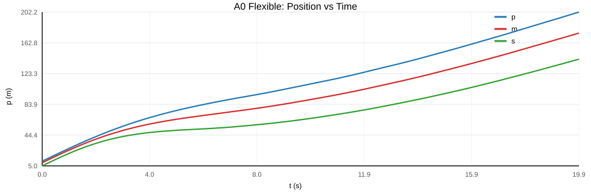
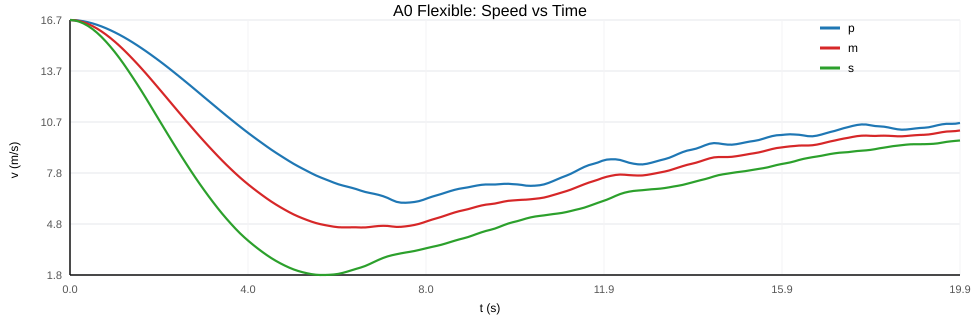
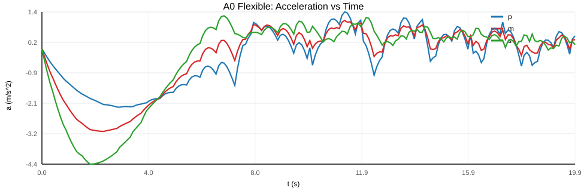

场景：p=11, m=9, s=5, v0=16.7 m/s，模式：flexible，总 tick：200
merge tick：200，coordination tick：0，safe_wait tick：0
初始 gap(p-s)：6.0 m，最终 gap(p-s)：60.4 m
最终速度：p=10.7，m=10.2，s=9.7 m/s
原始数据：a0_flexible_trace.csv


